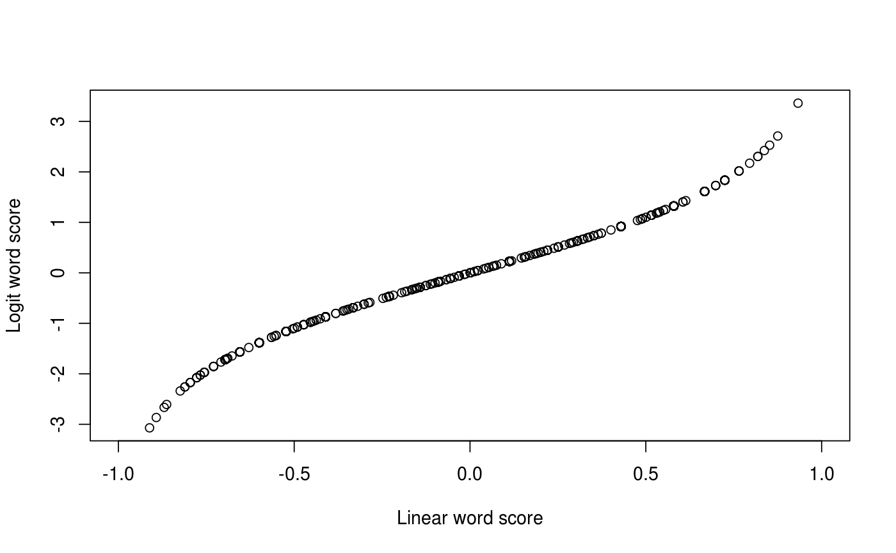

Fit a text model to a dfm. Creates an object of virtual class
textmodel_fitted-class, whose exact properties (slots and methods)
will depend on which model was called (see model types below).
textmodel(x, y = NULL, data = NULL, model = c("wordscores", "nb", "wordfish", "ca", "lsa"), ...) # S4 method for dfm,ANY,missing,character textmodel(x, y = NULL, data = NULL, model = c("wordscores", "nb", "wordfish", "ca", "lsa"), ...) # S4 method for formula,missing,dfm,character textmodel(x, y = NULL, data = NULL, model = c("wordscores", "nb", "wordfish", "ca", "lsa"), ...)
| x | a quanteda dfm object containing feature counts by document |
|---|---|
| y | for supervised models, a vector of class labels or values for
training the model, with |
| data | dfm or data.frame from which to take the formula |
| model | the model type to be fit. Currently implemented methods are:
|
| ... | additional arguments to be passed to specific model types |
| formula | An object of class formula of the form |
a textmodel class list, containing the fitted model and
additional information specific to the model class. See the methods for
specific models, e.g. textmodel_wordscores,
etc.
Here will go the description of the class hierarchy that governs dispatch for the predict, print, summary methods, since this is not terribly obvious. (Blame it on the S3 system.)
textmodel, textmodel_wordscores
ieDfm <- dfm(data_corpus_irishbudget2010, verbose=FALSE) refscores <- c(rep(NA, 4), -1, 1, rep(NA, 8)) ws <- textmodel(ieDfm, refscores, model="wordscores", smooth=1) # alternative formula notation - but slower # need the - 1 to remove the intercept, as this is literal formula notation wsform <- textmodel(refscores ~ . - 1, data=ieDfm, model="wordscores", smooth=1) identical(ws@Sw, wsform@Sw) # compare wordscores from the two models#> [1] TRUE# compare the logit and linear wordscores bs <- textmodel(ieDfm[5:6,], refscores[5:6], model="wordscores", scale="logit", smooth=1) plot(ws@Sw, bs@Sw, xlim=c(-1, 1), xlab="Linear word score", ylab="Logit word score")# NOT RUN { wf <- textmodel(ieDfm, model="wordfish", dir = c(6,5)) wf # }